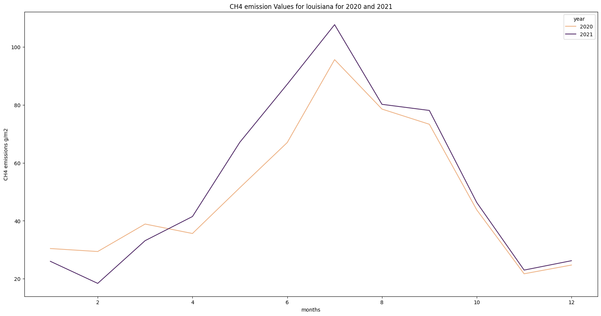

import requests
import folium
import folium.plugins
from folium import Map, TileLayer
from pystac_client import Client
import pandas as pd
import matplotlib.pyplot as plt
import branca.colormap as cm
import geopandas
from pyproj import Geod
from shapely import wkt
import seaborn as sns
import glob
import numpy as np
from datetime import datetime
import netCDF4 as ncWetland Methane Emissions, LPJ-wsl Model
Global, daily and monthly 0.5 degree resolution methane emission estimates from wetlands, LPJ-wsl model
Approach
- Identify available dates and temporal frequency of observations for the given collection using the GHGC API
/stacendpoint. The collection processed in this notebook is the Wetland Methane Emissions, LPJ-wsl Model data product. - Pass the STAC item into the raster API
/stac/tilejson.jsonendpoint. - Using plugins from folium to visualize two tiles (side-by-side), allowing time point comparison.
- After the visualization, perform zonal statistics for a given polygon.
- Read monthly MERRA-2 data for different variables (precipitation rate, surface soil moisture)
- Plot monthly time series for LPJ-wetland emission and different MERRA-2 dataset and analyse them.
About the Data
Methane (CH₄) emissions from wetlands are estimated to be the largest natural source of methane in the global CH₄ budget, contributing to roughly one third of the total of natural and anthropogenic emissions. Wetland CH₄ is produced by microbes breaking down organic matter in the oxygen deprived environment of inundated soils. Due to limited data availability, the details of the role of wetland CH₄ emissions has thus far been underrepresented. Using the Wald Schnee und Landschaft version (LPJ-wsl) of the Lund-Potsdam-Jena Dynamic Global Vegetation Model (LPJ-DGVM) global CH₄ emissions from wetlands are estimated at 0.5 x 0.5 degree resolution by simulating wetland extent and using characteristics of these inundated areas, such as soil moisture, temperature, and carbon content, to estimate CH₄ quantities emitted into the atmosphere. Highlighted areas displayed in this dataset show concentrated methane sources from tropical and high latitude ecosystems. The LPJ-wsl Wetland Methane Emissions data product presented here consists of global daily and monthly model estimates of terrestrial wetland CH₄ emissions from 1980 - 2021. These data are regularly used in conjunction with NASA’s Goddard Earth Observing System (GEOS) model to simulate the impact of wetlands and other methane sources on atmospheric methane concentrations, to compare against satellite and airborne data, and to improve understanding and prediction of wetland emissions.
Flow of Workshop
- Reading data
- Read LPJ dataset from STAC
- Read subset of Merra-2 (few variables) data using credentials
- Creating different region of interest
- Statistical Analysis
- Select the region and create time series of total emission in the region Note we will have line chart for two different years to show inter annual variability
- Create dual folium map to show visual comparision
- Plot monthly mean and climate mean using merra-2 data for same region of interest
- Plot time series for the following data and time period to interpret the results:
- 2020, 2021 - LPJ monthly emissions
- 2020, 2021 - Merra 2 T2M monthly anomaly
- 2020, 2021 - Total precipitation rate
Datasets to be used 1. Monthly LPJ Wetland CH4 Emissions 2. Monthly MERRA-2 Precipitation RateDataset: MERRA2_400.tavgM_2d_flx_Nx Variable: ‘PRECTOT’ https://disc.gsfc.nasa.gov/datasets/M2TMNXFLX_5.12.4/summary
Monthly MERRA-2 Surface Soil MoistureDataset: MERRA2_400.tavgM_2d_lnd_Nx Variable: ‘SFMC’ Long-term mean variable: ‘GWETTOP’ https://disc.gsfc.nasa.gov/datasets/M2TMNXLND_5.12.4/summary
Monthly MERRA-2 T2MDataset: MERRA2_400.instM_2d_asm_Nx Variable: ‘T2M’ https://disc.gsfc.nasa.gov/datasets/M2IMNXASM_5.12.4/summary
MERRA-2 Long-Term MeansMERRA2.tavgC_2d_ltm_Nx https://disc.gsfc.nasa.gov/datasets/M2TCNXLTM_1/summary
Use case to be discussed: 1. Midwest floods in 2019 2. Pick events of interest
Installing the Required Libraries
Required libraries are pre-installed on the GHG Center Hub. If you need to run this notebook elsewhere, please install them with this line in a code cell:
pip install requests, folium, rasterstats, pystac_client, pandas, matplotlib, geopandas, seaborn
Querying the STAC API
# Provide STAC and RASTER API endpoints
STAC_API_URL = "http://ghg.center/api/stac"
RASTER_API_URL = "https://ghg.center/api/raster"
# Please use the collection name similar to the one used in STAC collection.
# Name of the collection for wetland methane monthly emissions.
collection_name = "lpjwsl-wetlandch4-monthgrid-v1"# Fetching the collection from STAC collections using appropriate endpoint.
collection = requests.get(f"{STAC_API_URL}/collections/{collection_name}").json()
collection{'id': 'lpjwsl-wetlandch4-monthgrid-v1',
'type': 'Collection',
'links': [{'rel': 'items',
'type': 'application/geo+json',
'href': 'https://ghg.center/api/stac/collections/lpjwsl-wetlandch4-monthgrid-v1/items'},
{'rel': 'parent',
'type': 'application/json',
'href': 'https://ghg.center/api/stac/'},
{'rel': 'root',
'type': 'application/json',
'href': 'https://ghg.center/api/stac/'},
{'rel': 'self',
'type': 'application/json',
'href': 'https://ghg.center/api/stac/collections/lpjwsl-wetlandch4-monthgrid-v1'}],
'title': 'Wetland Methane Emissions, LPJ-wsl Model (Monthly)',
'assets': None,
'extent': {'spatial': {'bbox': [[-180, -90, 180, 90]]},
'temporal': {'interval': [['1980-01-01T00:00:00+00:00',
'2021-12-01T00:00:00+00:00']]}},
'license': 'CC-BY-4.0',
'keywords': None,
'providers': None,
'summaries': {'datetime': ['1980-01-01T00:00:00Z', '2021-12-01T00:00:00Z']},
'description': 'Wetland methane emissions produced by the Lund–Potsdam–Jena Dynamic Global Vegetation Model (LPJ-DGVM) Wald Schnee und Landscaft version (LPJ-wsl). LPJ-wsl is a prognostic model used to simulate future changes in wetland emissions and independently verified with remote sensing data products. The LPJ-wsl model is regularly used in conjunction with NASA’s GEOS model to simulate the impact of wetlands and other methane sources on atmospheric methane concentrations.',
'item_assets': {'ch4-wetlands-emissions': {'type': 'image/tiff; application=geotiff; profile=cloud-optimized',
'roles': ['data', 'layer'],
'title': 'CH4 Wetland Emissions',
'description': 'Methane emissions from wetlands.'}},
'stac_version': '1.0.0',
'stac_extensions': None,
'dashboard:is_periodic': True,
'dashboard:time_density': 'month'}Examining the contents of our collection under summaries, we see that the data is available from January 1980 to may 2021. By looking at dashboard: time density, we can see that these observations are collected monthly.
def get_item_count(collection_id):
count = 0
items_url = f"{STAC_API_URL}/collections/{collection_id}/items"
while True:
response = requests.get(items_url)
if not response.ok:
print("error getting items")
exit()
stac = response.json()
count += int(stac["context"].get("returned", 0))
next = [link for link in stac["links"] if link["rel"] == "next"]
if not next:
break
items_url = next[0]["href"]
return count# Check total number of items available
number_of_items = get_item_count(collection_name)
items = requests.get(f"{STAC_API_URL}/collections/{collection_name}/items?limit={number_of_items}").json()["features"]
print(f"Found {len(items)} items")Found 504 items# Examining the first item in the collection
items[0]{'id': 'lpjwsl-wetlandch4-monthgrid-v1-202112',
'bbox': [-180.0, -90.0, 180.0, 90.0],
'type': 'Feature',
'links': [{'rel': 'collection',
'type': 'application/json',
'href': 'https://ghg.center/api/stac/collections/lpjwsl-wetlandch4-monthgrid-v1'},
{'rel': 'parent',
'type': 'application/json',
'href': 'https://ghg.center/api/stac/collections/lpjwsl-wetlandch4-monthgrid-v1'},
{'rel': 'root',
'type': 'application/json',
'href': 'https://ghg.center/api/stac/'},
{'rel': 'self',
'type': 'application/geo+json',
'href': 'https://ghg.center/api/stac/collections/lpjwsl-wetlandch4-monthgrid-v1/items/lpjwsl-wetlandch4-monthgrid-v1-202112'}],
'assets': {'ch4-wetlands-emissions': {'href': 's3://ghgc-data-store/lpjwsl-wetlandch4-monthgrid-v1/NASA_GSFC_ch4_wl_ch4_wetlands_v22_x720_y360_t12_202112.tif',
'type': 'image/tiff; application=geotiff; profile=cloud-optimized',
'roles': ['data', 'layer'],
'title': 'CH4 Wetland Emissions',
'proj:bbox': [-180.0, -90.0, 180.0, 90.0],
'proj:epsg': 4326.0,
'proj:shape': [360.0, 720.0],
'description': 'Methane emissions from wetlands.',
'raster:bands': [{'scale': 1.0,
'offset': 0.0,
'sampling': 'area',
'data_type': 'float32',
'histogram': {'max': 6.929981708526611,
'min': 0.0,
'count': 11.0,
'buckets': [258080.0,
575.0,
251.0,
124.0,
78.0,
41.0,
26.0,
16.0,
7.0,
2.0]},
'statistics': {'mean': 0.012271502055227757,
'stddev': 0.1378920078277588,
'maximum': 6.929981708526611,
'minimum': 0.0,
'valid_percent': 0.0003858024691358025}}],
'proj:geometry': {'type': 'Polygon',
'coordinates': [[[-180.0, -90.0],
[180.0, -90.0],
[180.0, 90.0],
[-180.0, 90.0],
[-180.0, -90.0]]]},
'proj:projjson': {'id': {'code': 4326.0, 'authority': 'EPSG'},
'name': 'WGS 84',
'type': 'GeographicCRS',
'datum': {'name': 'World Geodetic System 1984',
'type': 'GeodeticReferenceFrame',
'ellipsoid': {'name': 'WGS 84',
'semi_major_axis': 6378137.0,
'inverse_flattening': 298.257223563}},
'$schema': 'https://proj.org/schemas/v0.4/projjson.schema.json',
'coordinate_system': {'axis': [{'name': 'Geodetic latitude',
'unit': 'degree',
'direction': 'north',
'abbreviation': 'Lat'},
{'name': 'Geodetic longitude',
'unit': 'degree',
'direction': 'east',
'abbreviation': 'Lon'}],
'subtype': 'ellipsoidal'}},
'proj:transform': [0.5, 0.0, -180.0, 0.0, -0.5, 90.0, 0.0, 0.0, 1.0]}},
'geometry': {'type': 'Polygon',
'coordinates': [[[-180, -90],
[180, -90],
[180, 90],
[-180, 90],
[-180, -90]]]},
'collection': 'lpjwsl-wetlandch4-monthgrid-v1',
'properties': {'datetime': '2021-12-01T00:00:00+00:00'},
'stac_version': '1.0.0',
'stac_extensions': []}Below, we enter minimum and maximum values to provide our upper and lower bounds in rescale_values.
rescale_values = {'max': 2.0, 'min': 0.0}Exploring Changes in Methane (CH4) Emission Levels Using the Raster API
In this notebook, we will explore the temporal impacts of methane emissions. We will visualize the outputs on a map using folium.
# To access the year value from each item more easily, this will let us query more explicity by year and month (e.g., 2020-02)
items = {item["properties"]["datetime"][:7]: item for item in items}
asset_name = 'ch4-wetlands-emissions'# We create a area of interest (polygon) on which will be used later
aoi = [-95.9,-87.50,28.7,33.5]
louisiana_aoi = {
"type": "Feature",
"properties": {},
"geometry": {
"coordinates": [
[
[aoi[0], aoi[2]],
[aoi[0], aoi[3]],
[aoi[1], aoi[3]],
[aoi[1],aoi[2]],
[aoi[0], aoi[2]]
]
],
"type": "Polygon",
},
}Now, we will pass the item id, collection name, and rescaling_factor to the Raster API endpoint. We will do this twice, once for may 2020 and again for may 2021, so we can visualize each event independently.
color_map = "magma" # select the color ramp from matplotlib library.
may_2020_tile = requests.get(
f"{RASTER_API_URL}/stac/tilejson.json?collection={items['2001-05']['collection']}&item={items['2020-05']['id']}"
"&assets=ch4-wetlands-emissions"
f"&color_formula=gamma+r+1.05&colormap_name={color_map}"
f"&rescale={rescale_values['min']},{rescale_values['max']}"
).json()
may_2020_tile{'tilejson': '2.2.0',
'version': '1.0.0',
'scheme': 'xyz',
'tiles': ['https://ghg.center/api/raster/stac/tiles/WebMercatorQuad/{z}/{x}/{y}@1x?collection=lpjwsl-wetlandch4-monthgrid-v1&item=lpjwsl-wetlandch4-monthgrid-v1-202005&assets=ch4-wetlands-emissions&color_formula=gamma+r+1.05&colormap_name=magma&rescale=0.0%2C2.0'],
'minzoom': 0,
'maxzoom': 24,
'bounds': [-180.0, -90.0, 180.0, 90.0],
'center': [0.0, 0.0, 0]}may_2021_tile = requests.get(
f"{RASTER_API_URL}/stac/tilejson.json?collection={items['2021-05']['collection']}&item={items['2021-05']['id']}"
"&assets=ch4-wetlands-emissions"
f"&color_formula=gamma+r+1.05&colormap_name={color_map}"
f"&rescale={rescale_values['min']},{rescale_values['max']}",
).json()
may_2021_tile{'tilejson': '2.2.0',
'version': '1.0.0',
'scheme': 'xyz',
'tiles': ['https://ghg.center/api/raster/stac/tiles/WebMercatorQuad/{z}/{x}/{y}@1x?collection=lpjwsl-wetlandch4-monthgrid-v1&item=lpjwsl-wetlandch4-monthgrid-v1-202105&assets=ch4-wetlands-emissions&color_formula=gamma+r+1.05&colormap_name=magma&rescale=0.0%2C2.0'],
'minzoom': 0,
'maxzoom': 24,
'bounds': [-180.0, -90.0, 180.0, 90.0],
'center': [0.0, 0.0, 0]}Visualizing CH₄ Emissions
# We will import folium to map and folium.plugins to allow side-by-side mapping
# Set initial zoom and center of map for CH₄ Layer
# Centre of map [latitude,longitude]
from folium.plugins import MousePosition
map_ = folium.Map(location=(30,-90), zoom_start=6)
# May 2001
map_layer_2001 = TileLayer(
tiles=may_2020_tile["tiles"][0],
attr="GHG",
opacity=0.5,
)
# May 2021
map_layer_2021 = TileLayer(
tiles=may_2021_tile["tiles"][0],
attr="GHG",
opacity=0.5,
)
sbs = folium.plugins.SideBySideLayers(layer_left=map_layer_2001, layer_right=map_layer_2021)
map_layer_2001.add_to(map_)
map_layer_2021.add_to(map_)
folium.GeoJson(louisiana_aoi, name="louisiana, USA").add_to(map_)
sbs.add_to(map_)
MousePosition().add_to(map_)
# visualising the map
map_
Make this Notebook Trusted to load map: File -> Trust Notebook
items = requests.get(f"{STAC_API_URL}/collections/{collection_name}/items?limit={number_of_items}").json()["features"]# The bounding box should be passed to the geojson param as a geojson Feature or FeatureCollection
def generate_stats(item, geojson):
result = requests.post(
f"{RASTER_API_URL}/cog/statistics",
params={"url": item["assets"]["ch4-wetlands-emissions"]["href"]},
json=geojson,
).json()
return {
**result["properties"],
"datetime": item["properties"]["datetime"],
}With the function above, we can generate the statistics for the area of interest.
# It will take around 5 minutes to run the statistics
stats = [generate_stats(item, louisiana_aoi) for item in items[:24]]
stats[{'statistics': {'b1': {'min': 0.0,
'max': 0.7171422839164734,
'mean': 0.15437047621783087,
'count': 170.0,
'sum': 26.24298095703125,
'std': 0.1835849342048151,
'median': 0.05701697617769241,
'majority': 0.0,
'minority': 0.00043509763781912625,
'unique': 123.0,
'histogram': [[92.0, 9.0, 13.0, 10.0, 14.0, 16.0, 7.0, 4.0, 3.0, 2.0],
[0.0,
0.07171422988176346,
0.14342845976352692,
0.21514268219470978,
0.28685691952705383,
0.3585711419582367,
0.43028536438941956,
0.5019996166229248,
0.5737138390541077,
0.6454280614852905,
0.7171422839164734]],
'valid_percent': 100.0,
'masked_pixels': 0.0,
'valid_pixels': 170.0,
'percentile_2': 0.0,
'percentile_98': 0.5802477025985717}},
'datetime': '2021-12-01T00:00:00+00:00'},
{'statistics': {'b1': {'min': 0.0,
'max': 0.516049861907959,
'mean': 0.13532144883099725,
'count': 170.0,
'sum': 23.00464630126953,
'std': 0.15769760565780438,
'median': 0.05566539615392685,
'majority': 0.0,
'minority': 0.0002954523079097271,
'unique': 123.0,
'histogram': [[84.0, 13.0, 12.0, 7.0, 9.0, 12.0, 11.0, 8.0, 7.0, 7.0],
[0.0,
0.0516049861907959,
0.1032099723815918,
0.1548149585723877,
0.2064199447631836,
0.2580249309539795,
0.3096299171447754,
0.3612349033355713,
0.4128398895263672,
0.4644448757171631,
0.516049861907959]],
'valid_percent': 100.0,
'masked_pixels': 0.0,
'valid_pixels': 170.0,
'percentile_2': 0.0,
'percentile_98': 0.48761060655117044}},
'datetime': '2021-11-01T00:00:00+00:00'},
{'statistics': {'b1': {'min': 0.0,
'max': 1.3371007442474365,
'mean': 0.27248965992647056,
'count': 170.0,
'sum': 46.3232421875,
'std': 0.32895022521723327,
'median': 0.08361007273197174,
'majority': 0.0,
'minority': 0.0006618715706281364,
'unique': 123.0,
'histogram': [[94.0, 10.0, 13.0, 10.0, 18.0, 10.0, 7.0, 5.0, 1.0, 2.0],
[0.0,
0.1337100714445114,
0.2674201428890228,
0.40113022923469543,
0.5348402857780457,
0.6685503721237183,
0.8022604584693909,
0.9359705448150635,
1.0696805715560913,
1.2033907175064087,
1.3371007442474365]],
'valid_percent': 100.0,
'masked_pixels': 0.0,
'valid_pixels': 170.0,
'percentile_2': 0.0,
'percentile_98': 1.060954008102417}},
'datetime': '2021-10-01T00:00:00+00:00'},
{'statistics': {'b1': {'min': 0.0,
'max': 2.2005276679992676,
'mean': 0.45919602338005516,
'count': 170.0,
'sum': 78.06332397460938,
'std': 0.5457408213221397,
'median': 0.18731170892715454,
'majority': 0.0,
'minority': 0.002108836779370904,
'unique': 123.0,
'histogram': [[90.0, 15.0, 8.0, 16.0, 13.0, 11.0, 10.0, 4.0, 1.0, 2.0],
[0.0,
0.22005276381969452,
0.44010552763938904,
0.6601582765579224,
0.8802110552787781,
1.1002638339996338,
1.3203165531158447,
1.5403693914413452,
1.7604221105575562,
1.9804749488830566,
2.2005276679992676]],
'valid_percent': 100.0,
'masked_pixels': 0.0,
'valid_pixels': 170.0,
'percentile_2': 0.0,
'percentile_98': 1.6831329369544983}},
'datetime': '2021-09-01T00:00:00+00:00'},
{'statistics': {'b1': {'min': 0.0,
'max': 2.2805004119873047,
'mean': 0.4716072531307445,
'count': 170.0,
'sum': 80.17323303222656,
'std': 0.5656065478170901,
'median': 0.19661885499954224,
'majority': 0.0,
'minority': 0.0015638105105608702,
'unique': 123.0,
'histogram': [[89.0, 16.0, 11.0, 13.0, 14.0, 13.0, 5.0, 5.0, 3.0, 1.0],
[0.0,
0.22805003821849823,
0.45610007643699646,
0.6841500997543335,
0.9122001528739929,
1.1402502059936523,
1.368300199508667,
1.5963503122329712,
1.8244003057479858,
2.05245041847229,
2.2805004119873047]],
'valid_percent': 100.0,
'masked_pixels': 0.0,
'valid_pixels': 170.0,
'percentile_2': 0.0,
'percentile_98': 1.8883533668518073}},
'datetime': '2021-08-01T00:00:00+00:00'},
{'statistics': {'b1': {'min': 0.0,
'max': 3.072227716445923,
'mean': 0.6332277634564568,
'count': 170.0,
'sum': 107.64871978759766,
'std': 0.7631461866897622,
'median': 0.2839159667491913,
'majority': 0.0,
'minority': 0.0024779888335615396,
'unique': 123.0,
'histogram': [[91.0, 15.0, 12.0, 11.0, 13.0, 14.0, 3.0, 7.0, 3.0, 1.0],
[0.0,
0.30722278356552124,
0.6144455671310425,
0.921668291091919,
1.228891134262085,
1.5361138582229614,
1.843336582183838,
2.150559425354004,
2.45778226852417,
2.765004873275757,
3.072227716445923]],
'valid_percent': 100.0,
'masked_pixels': 0.0,
'valid_pixels': 170.0,
'percentile_2': 0.0,
'percentile_98': 2.494618062973023}},
'datetime': '2021-07-01T00:00:00+00:00'},
{'statistics': {'b1': {'min': 0.0,
'max': 2.1353492736816406,
'mean': 0.5122916726505056,
'count': 170.0,
'sum': 87.08958435058594,
'std': 0.5816176132620369,
'median': 0.23781655728816986,
'majority': 0.0,
'minority': 0.002265247516334057,
'unique': 123.0,
'histogram': [[80.0, 19.0, 9.0, 9.0, 15.0, 17.0, 6.0, 7.0, 6.0, 2.0],
[0.0,
0.21353492140769958,
0.42706984281539917,
0.6406047940254211,
0.8541396856307983,
1.0676746368408203,
1.2812095880508423,
1.4947445392608643,
1.7082793712615967,
1.9218143224716187,
2.1353492736816406]],
'valid_percent': 100.0,
'masked_pixels': 0.0,
'valid_pixels': 170.0,
'percentile_2': 0.0,
'percentile_98': 1.7408480906486512}},
'datetime': '2021-06-01T00:00:00+00:00'},
{'statistics': {'b1': {'min': 0.0,
'max': 1.7123756408691406,
'mean': 0.3947353587431066,
'count': 170.0,
'sum': 67.10501098632812,
'std': 0.4542843921906756,
'median': 0.16888344287872314,
'majority': 0.0,
'minority': 0.001768625108525157,
'unique': 123.0,
'histogram': [[87.0, 13.0, 9.0, 9.0, 19.0, 17.0, 3.0, 6.0, 5.0, 2.0],
[0.0,
0.17123755812644958,
0.34247511625289917,
0.5137127041816711,
0.6849502325057983,
0.8561878204345703,
1.0274254083633423,
1.1986629962921143,
1.3699004650115967,
1.5411380529403687,
1.7123756408691406]],
'valid_percent': 100.0,
'masked_pixels': 0.0,
'valid_pixels': 170.0,
'percentile_2': 0.0,
'percentile_98': 1.4123617601394653}},
'datetime': '2021-05-01T00:00:00+00:00'},
{'statistics': {'b1': {'min': 0.0,
'max': 0.8859390616416931,
'mean': 0.24400625789866728,
'count': 170.0,
'sum': 41.48106384277344,
'std': 0.28321048400965054,
'median': 0.09922437369823456,
'majority': 0.0,
'minority': 0.0006858149426989257,
'unique': 123.0,
'histogram': [[84.0, 13.0, 10.0, 8.0, 5.0, 10.0, 11.0, 15.0, 7.0, 7.0],
[0.0,
0.08859390765428543,
0.17718781530857086,
0.2657817304134369,
0.3543756306171417,
0.44296953082084656,
0.5315634608268738,
0.6201573610305786,
0.7087512612342834,
0.7973451614379883,
0.8859390616416931]],
'valid_percent': 100.0,
'masked_pixels': 0.0,
'valid_pixels': 170.0,
'percentile_2': 0.0,
'percentile_98': 0.8462702941894532}},
'datetime': '2021-04-01T00:00:00+00:00'},
{'statistics': {'b1': {'min': 0.0,
'max': 0.659404993057251,
'mean': 0.19500977011287915,
'count': 170.0,
'sum': 33.15166091918945,
'std': 0.22056241116653577,
'median': 0.087272509932518,
'majority': 0.0,
'minority': 0.0006441613077186048,
'unique': 123.0,
'histogram': [[79.0, 17.0, 7.0, 10.0, 5.0, 7.0, 12.0, 16.0, 4.0, 13.0],
[0.0,
0.0659404993057251,
0.1318809986114502,
0.1978214979171753,
0.2637619972229004,
0.3297024965286255,
0.3956429958343506,
0.4615834951400757,
0.5275239944458008,
0.5934644937515259,
0.659404993057251]],
'valid_percent': 100.0,
'masked_pixels': 0.0,
'valid_pixels': 170.0,
'percentile_2': 0.0,
'percentile_98': 0.6313274204730988}},
'datetime': '2021-03-01T00:00:00+00:00'},
{'statistics': {'b1': {'min': 0.0,
'max': 0.4581904411315918,
'mean': 0.1083783093620749,
'count': 170.0,
'sum': 18.424312591552734,
'std': 0.13051518085377295,
'median': 0.039194926619529724,
'majority': 0.0,
'minority': 0.00028075711452402174,
'unique': 123.0,
'histogram': [[87.0, 15.0, 12.0, 9.0, 10.0, 9.0, 10.0, 8.0, 7.0, 3.0],
[0.0,
0.04581904411315918,
0.09163808822631836,
0.13745713233947754,
0.18327617645263672,
0.2290952205657959,
0.2749142646789551,
0.32073330879211426,
0.36655235290527344,
0.4123713970184326,
0.4581904411315918]],
'valid_percent': 100.0,
'masked_pixels': 0.0,
'valid_pixels': 170.0,
'percentile_2': 0.0,
'percentile_98': 0.398276316523552}},
'datetime': '2021-02-01T00:00:00+00:00'},
{'statistics': {'b1': {'min': 0.0,
'max': 0.6753556728363037,
'mean': 0.1531466427971335,
'count': 170.0,
'sum': 26.034929275512695,
'std': 0.1810563542947181,
'median': 0.06246931105852127,
'majority': 0.0,
'minority': 0.0005269754328764975,
'unique': 123.0,
'histogram': [[90.0, 12.0, 11.0, 8.0, 15.0, 16.0, 4.0, 7.0, 5.0, 2.0],
[0.0,
0.06753556430339813,
0.13507112860679626,
0.2026067078113556,
0.27014225721359253,
0.33767783641815186,
0.4052134156227112,
0.4727489650249481,
0.5402845144271851,
0.6078200936317444,
0.6753556728363037]],
'valid_percent': 100.0,
'masked_pixels': 0.0,
'valid_pixels': 170.0,
'percentile_2': 0.0,
'percentile_98': 0.5708203029632569}},
'datetime': '2021-01-01T00:00:00+00:00'},
{'statistics': {'b1': {'min': 0.0,
'max': 0.6949237585067749,
'mean': 0.14557975320255054,
'count': 170.0,
'sum': 24.748558044433594,
'std': 0.17713435804121008,
'median': 0.05363526940345764,
'majority': 0.0,
'minority': 0.00041759133455343544,
'unique': 123.0,
'histogram': [[93.0, 13.0, 11.0, 11.0, 13.0, 13.0, 7.0, 5.0, 1.0, 3.0],
[0.0,
0.06949237734079361,
0.13898475468158722,
0.20847712457180023,
0.27796950936317444,
0.34746187925338745,
0.41695424914360046,
0.4864466190338135,
0.5559390187263489,
0.6254313588142395,
0.6949237585067749]],
'valid_percent': 100.0,
'masked_pixels': 0.0,
'valid_pixels': 170.0,
'percentile_2': 0.0,
'percentile_98': 0.5663253521919251}},
'datetime': '2020-12-01T00:00:00+00:00'},
{'statistics': {'b1': {'min': 0.0,
'max': 0.5358846783638,
'mean': 0.1278377981746898,
'count': 170.0,
'sum': 21.732425689697266,
'std': 0.15343874105291866,
'median': 0.04972578585147858,
'majority': 0.0,
'minority': 0.00028196285711601377,
'unique': 123.0,
'histogram': [[86.0, 14.0, 14.0, 8.0, 13.0, 9.0, 8.0, 8.0, 6.0, 4.0],
[0.0,
0.053588468581438065,
0.10717693716287613,
0.1607654094696045,
0.21435387432575226,
0.2679423391819,
0.321530818939209,
0.37511926889419556,
0.4287077486515045,
0.4822961986064911,
0.5358846783638]],
'valid_percent': 100.0,
'masked_pixels': 0.0,
'valid_pixels': 170.0,
'percentile_2': 0.0,
'percentile_98': 0.48206853270530703}},
'datetime': '2020-11-01T00:00:00+00:00'},
{'statistics': {'b1': {'min': 0.0,
'max': 1.255740761756897,
'mean': 0.2575576333438649,
'count': 170.0,
'sum': 43.78479766845703,
'std': 0.31693399768408115,
'median': 0.0768575668334961,
'majority': 0.0,
'minority': 0.0006190046551637352,
'unique': 123.0,
'histogram': [[94.0, 13.0, 10.0, 10.0, 17.0, 9.0, 8.0, 4.0, 3.0, 2.0],
[0.0,
0.12557408213615417,
0.25114816427230835,
0.37672221660614014,
0.5022963285446167,
0.6278703808784485,
0.7534444332122803,
0.8790185451507568,
1.0045926570892334,
1.1301666498184204,
1.255740761756897]],
'valid_percent': 100.0,
'masked_pixels': 0.0,
'valid_pixels': 170.0,
'percentile_2': 0.0,
'percentile_98': 1.0394352316856386}},
'datetime': '2020-10-01T00:00:00+00:00'},
{'statistics': {'b1': {'min': 0.0,
'max': 1.9983481168746948,
'mean': 0.43116993623621325,
'count': 170.0,
'sum': 73.29888916015625,
'std': 0.5197145296917448,
'median': 0.17324364185333252,
'majority': 0.0,
'minority': 0.0019067995017394423,
'unique': 123.0,
'histogram': [[89.0, 16.0, 11.0, 11.0, 13.0, 8.0, 10.0, 8.0, 2.0, 2.0],
[0.0,
0.19983480870723724,
0.3996696174144745,
0.5995044112205505,
0.799339234828949,
0.9991740584373474,
1.199008822441101,
1.3988436460494995,
1.598678469657898,
1.7985132932662964,
1.9983481168746948]],
'valid_percent': 100.0,
'masked_pixels': 0.0,
'valid_pixels': 170.0,
'percentile_2': 0.0,
'percentile_98': 1.6112784051895146}},
'datetime': '2020-09-01T00:00:00+00:00'},
{'statistics': {'b1': {'min': 0.0,
'max': 2.0058531761169434,
'mean': 0.4619821436264936,
'count': 170.0,
'sum': 78.5369644165039,
'std': 0.5712842682229454,
'median': 0.16520659625530243,
'majority': 0.0,
'minority': 0.001269881846383214,
'unique': 123.0,
'histogram': [[91.0, 14.0, 11.0, 13.0, 6.0, 10.0, 6.0, 8.0, 6.0, 5.0],
[0.0,
0.20058532059192657,
0.40117064118385315,
0.6017559766769409,
0.8023412823677063,
1.0029265880584717,
1.2035119533538818,
1.4040971994400024,
1.6046825647354126,
1.8052678108215332,
2.0058531761169434]],
'valid_percent': 100.0,
'masked_pixels': 0.0,
'valid_pixels': 170.0,
'percentile_2': 0.0,
'percentile_98': 1.8289475870132446}},
'datetime': '2020-08-01T00:00:00+00:00'},
{'statistics': {'b1': {'min': 0.0,
'max': 2.070863723754883,
'mean': 0.5622900570140166,
'count': 170.0,
'sum': 95.58930969238281,
'std': 0.6425463273519573,
'median': 0.2530515491962433,
'majority': 0.0,
'minority': 0.002212761202827096,
'unique': 123.0,
'histogram': [[81.0, 17.0, 9.0, 8.0, 8.0, 13.0, 10.0, 8.0, 10.0, 6.0],
[0.0,
0.20708636939525604,
0.4141727387905121,
0.6212590932846069,
0.8283454775810242,
1.0354318618774414,
1.2425181865692139,
1.4496046304702759,
1.6566909551620483,
1.8637773990631104,
2.070863723754883]],
'valid_percent': 100.0,
'masked_pixels': 0.0,
'valid_pixels': 170.0,
'percentile_2': 0.0,
'percentile_98': 1.9805018997192385}},
'datetime': '2020-07-01T00:00:00+00:00'},
{'statistics': {'b1': {'min': 0.0,
'max': 1.6319794654846191,
'mean': 0.39405023911420034,
'count': 170.0,
'sum': 66.98854064941406,
'std': 0.4457748225152684,
'median': 0.1712484061717987,
'majority': 0.0,
'minority': 0.0013915648451074958,
'unique': 123.0,
'histogram': [[82.0, 18.0, 9.0, 9.0, 9.0, 18.0, 11.0, 9.0, 3.0, 2.0],
[0.0,
0.16319794952869415,
0.3263958990573883,
0.48959383368492126,
0.6527917981147766,
0.8159897327423096,
0.9791876673698425,
1.1423856019973755,
1.3055835962295532,
1.4687814712524414,
1.6319794654846191]],
'valid_percent': 100.0,
'masked_pixels': 0.0,
'valid_pixels': 170.0,
'percentile_2': 0.0,
'percentile_98': 1.3640193176269535}},
'datetime': '2020-06-01T00:00:00+00:00'},
{'statistics': {'b1': {'min': 0.0,
'max': 1.4179749488830566,
'mean': 0.3024932861328125,
'count': 170.0,
'sum': 51.423858642578125,
'std': 0.35093550103567694,
'median': 0.12169831991195679,
'majority': 0.0,
'minority': 0.001449149684049189,
'unique': 123.0,
'histogram': [[88.0, 13.0, 10.0, 17.0, 12.0, 16.0, 7.0, 4.0, 0.0, 3.0],
[0.0,
0.1417974978685379,
0.2835949957370758,
0.4253924787044525,
0.5671899914741516,
0.7089874744415283,
0.850784957408905,
0.9925824403762817,
1.1343799829483032,
1.2761774063110352,
1.4179749488830566]],
'valid_percent': 100.0,
'masked_pixels': 0.0,
'valid_pixels': 170.0,
'percentile_2': 0.0,
'percentile_98': 1.092334604263306}},
'datetime': '2020-05-01T00:00:00+00:00'},
{'statistics': {'b1': {'min': 0.0,
'max': 0.9126242399215698,
'mean': 0.20955680398380055,
'count': 170.0,
'sum': 35.624656677246094,
'std': 0.23214241630129956,
'median': 0.10675151646137238,
'majority': 0.0,
'minority': 0.0011147678596898913,
'unique': 123.0,
'histogram': [[80.0, 17.0, 11.0, 12.0, 23.0, 9.0, 10.0, 5.0, 1.0, 2.0],
[0.0,
0.09126242250204086,
0.18252484500408173,
0.273787260055542,
0.36504969000816345,
0.4563121199607849,
0.547574520111084,
0.6388369798660278,
0.7300993800163269,
0.8213618397712708,
0.9126242399215698]],
'valid_percent': 100.0,
'masked_pixels': 0.0,
'valid_pixels': 170.0,
'percentile_2': 0.0,
'percentile_98': 0.7237258589267731}},
'datetime': '2020-04-01T00:00:00+00:00'},
{'statistics': {'b1': {'min': 0.0,
'max': 1.0447851419448853,
'mean': 0.22874827665441178,
'count': 170.0,
'sum': 38.88720703125,
'std': 0.25775953751223146,
'median': 0.10438993573188782,
'majority': 0.0,
'minority': 0.0009839008562266827,
'unique': 123.0,
'histogram': [[86.0, 15.0, 9.0, 13.0, 14.0, 20.0, 9.0, 1.0, 2.0, 1.0],
[0.0,
0.10447851568460464,
0.2089570313692093,
0.31343555450439453,
0.4179140627384186,
0.5223925709724426,
0.6268711090087891,
0.7313495874404907,
0.8358281254768372,
0.9403066039085388,
1.0447851419448853]],
'valid_percent': 100.0,
'masked_pixels': 0.0,
'valid_pixels': 170.0,
'percentile_2': 0.0,
'percentile_98': 0.7838775122165684}},
'datetime': '2020-03-01T00:00:00+00:00'},
{'statistics': {'b1': {'min': 0.0,
'max': 0.7303400635719299,
'mean': 0.1730064167695887,
'count': 170.0,
'sum': 29.411090850830078,
'std': 0.2041394445830063,
'median': 0.06572374701499939,
'majority': 0.0,
'minority': 0.0005588305648416281,
'unique': 123.0,
'histogram': [[86.0, 15.0, 12.0, 8.0, 13.0, 10.0, 12.0, 7.0, 4.0, 3.0],
[0.0,
0.07303400337696075,
0.1460680067539215,
0.21910202503204346,
0.292136013507843,
0.36517003178596497,
0.4382040500640869,
0.5112380385398865,
0.584272027015686,
0.6573060750961304,
0.7303400635719299]],
'valid_percent': 100.0,
'masked_pixels': 0.0,
'valid_pixels': 170.0,
'percentile_2': 0.0,
'percentile_98': 0.6206122100353242}},
'datetime': '2020-02-01T00:00:00+00:00'},
{'statistics': {'b1': {'min': 0.0,
'max': 0.7433937788009644,
'mean': 0.17906734242158778,
'count': 170.0,
'sum': 30.441448211669922,
'std': 0.20951516248017335,
'median': 0.06703908741474152,
'majority': 0.0,
'minority': 0.0004158392839599401,
'unique': 123.0,
'histogram': [[88.0, 12.0, 11.0, 9.0, 10.0, 13.0, 12.0, 8.0, 5.0, 2.0],
[0.0,
0.0743393748998642,
0.1486787497997284,
0.22301813960075378,
0.2973574995994568,
0.3716968894004822,
0.44603627920150757,
0.520375669002533,
0.5947149991989136,
0.669054388999939,
0.7433937788009644]],
'valid_percent': 100.0,
'masked_pixels': 0.0,
'valid_pixels': 170.0,
'percentile_2': 0.0,
'percentile_98': 0.637993005514145}},
'datetime': '2020-01-01T00:00:00+00:00'}]# Manipulating and cleaning the stats output from previous cell
def clean_stats(stats_json) -> pd.DataFrame:
df = pd.json_normalize(stats_json)
df.columns = [col.replace("statistics.b1.", "") for col in df.columns]
df["date"] = pd.to_datetime(df["datetime"])
return df
df = clean_stats(stats)
df.head(5)| datetime | min | max | mean | count | sum | std | median | majority | minority | unique | histogram | valid_percent | masked_pixels | valid_pixels | percentile_2 | percentile_98 | date | |
|---|---|---|---|---|---|---|---|---|---|---|---|---|---|---|---|---|---|---|
| 0 | 2021-12-01T00:00:00+00:00 | 0.0 | 0.717142 | 0.154370 | 170.0 | 26.242981 | 0.183585 | 0.057017 | 0.0 | 0.000435 | 123.0 | [[92.0, 9.0, 13.0, 10.0, 14.0, 16.0, 7.0, 4.0,... | 100.0 | 0.0 | 170.0 | 0.0 | 0.580248 | 2021-12-01 00:00:00+00:00 |
| 1 | 2021-11-01T00:00:00+00:00 | 0.0 | 0.516050 | 0.135321 | 170.0 | 23.004646 | 0.157698 | 0.055665 | 0.0 | 0.000295 | 123.0 | [[84.0, 13.0, 12.0, 7.0, 9.0, 12.0, 11.0, 8.0,... | 100.0 | 0.0 | 170.0 | 0.0 | 0.487611 | 2021-11-01 00:00:00+00:00 |
| 2 | 2021-10-01T00:00:00+00:00 | 0.0 | 1.337101 | 0.272490 | 170.0 | 46.323242 | 0.328950 | 0.083610 | 0.0 | 0.000662 | 123.0 | [[94.0, 10.0, 13.0, 10.0, 18.0, 10.0, 7.0, 5.0... | 100.0 | 0.0 | 170.0 | 0.0 | 1.060954 | 2021-10-01 00:00:00+00:00 |
| 3 | 2021-09-01T00:00:00+00:00 | 0.0 | 2.200528 | 0.459196 | 170.0 | 78.063324 | 0.545741 | 0.187312 | 0.0 | 0.002109 | 123.0 | [[90.0, 15.0, 8.0, 16.0, 13.0, 11.0, 10.0, 4.0... | 100.0 | 0.0 | 170.0 | 0.0 | 1.683133 | 2021-09-01 00:00:00+00:00 |
| 4 | 2021-08-01T00:00:00+00:00 | 0.0 | 2.280500 | 0.471607 | 170.0 | 80.173233 | 0.565607 | 0.196619 | 0.0 | 0.001564 | 123.0 | [[89.0, 16.0, 11.0, 13.0, 14.0, 13.0, 5.0, 5.0... | 100.0 | 0.0 | 170.0 | 0.0 | 1.888353 | 2021-08-01 00:00:00+00:00 |
# Filtering the stats for year 2020 and 2021
df_2020_2021 = df[(df['date'].dt.year == 2020) | (df['date'].dt.year == 2021)]
df_2020_2021['year'] = pd.to_datetime(df_2020_2021['datetime']).dt.year
df_2020_2021['month'] = pd.to_datetime(df_2020_2021['datetime']).dt.month
df_2020_2021| datetime | min | max | mean | count | sum | std | median | majority | minority | unique | histogram | valid_percent | masked_pixels | valid_pixels | percentile_2 | percentile_98 | date | year | month | |
|---|---|---|---|---|---|---|---|---|---|---|---|---|---|---|---|---|---|---|---|---|
| 0 | 2021-12-01T00:00:00+00:00 | 0.0 | 0.717142 | 0.154370 | 170.0 | 26.242981 | 0.183585 | 0.057017 | 0.0 | 0.000435 | 123.0 | [[92.0, 9.0, 13.0, 10.0, 14.0, 16.0, 7.0, 4.0,... | 100.0 | 0.0 | 170.0 | 0.0 | 0.580248 | 2021-12-01 00:00:00+00:00 | 2021 | 12 |
| 1 | 2021-11-01T00:00:00+00:00 | 0.0 | 0.516050 | 0.135321 | 170.0 | 23.004646 | 0.157698 | 0.055665 | 0.0 | 0.000295 | 123.0 | [[84.0, 13.0, 12.0, 7.0, 9.0, 12.0, 11.0, 8.0,... | 100.0 | 0.0 | 170.0 | 0.0 | 0.487611 | 2021-11-01 00:00:00+00:00 | 2021 | 11 |
| 2 | 2021-10-01T00:00:00+00:00 | 0.0 | 1.337101 | 0.272490 | 170.0 | 46.323242 | 0.328950 | 0.083610 | 0.0 | 0.000662 | 123.0 | [[94.0, 10.0, 13.0, 10.0, 18.0, 10.0, 7.0, 5.0... | 100.0 | 0.0 | 170.0 | 0.0 | 1.060954 | 2021-10-01 00:00:00+00:00 | 2021 | 10 |
| 3 | 2021-09-01T00:00:00+00:00 | 0.0 | 2.200528 | 0.459196 | 170.0 | 78.063324 | 0.545741 | 0.187312 | 0.0 | 0.002109 | 123.0 | [[90.0, 15.0, 8.0, 16.0, 13.0, 11.0, 10.0, 4.0... | 100.0 | 0.0 | 170.0 | 0.0 | 1.683133 | 2021-09-01 00:00:00+00:00 | 2021 | 9 |
| 4 | 2021-08-01T00:00:00+00:00 | 0.0 | 2.280500 | 0.471607 | 170.0 | 80.173233 | 0.565607 | 0.196619 | 0.0 | 0.001564 | 123.0 | [[89.0, 16.0, 11.0, 13.0, 14.0, 13.0, 5.0, 5.0... | 100.0 | 0.0 | 170.0 | 0.0 | 1.888353 | 2021-08-01 00:00:00+00:00 | 2021 | 8 |
| 5 | 2021-07-01T00:00:00+00:00 | 0.0 | 3.072228 | 0.633228 | 170.0 | 107.648720 | 0.763146 | 0.283916 | 0.0 | 0.002478 | 123.0 | [[91.0, 15.0, 12.0, 11.0, 13.0, 14.0, 3.0, 7.0... | 100.0 | 0.0 | 170.0 | 0.0 | 2.494618 | 2021-07-01 00:00:00+00:00 | 2021 | 7 |
| 6 | 2021-06-01T00:00:00+00:00 | 0.0 | 2.135349 | 0.512292 | 170.0 | 87.089584 | 0.581618 | 0.237817 | 0.0 | 0.002265 | 123.0 | [[80.0, 19.0, 9.0, 9.0, 15.0, 17.0, 6.0, 7.0, ... | 100.0 | 0.0 | 170.0 | 0.0 | 1.740848 | 2021-06-01 00:00:00+00:00 | 2021 | 6 |
| 7 | 2021-05-01T00:00:00+00:00 | 0.0 | 1.712376 | 0.394735 | 170.0 | 67.105011 | 0.454284 | 0.168883 | 0.0 | 0.001769 | 123.0 | [[87.0, 13.0, 9.0, 9.0, 19.0, 17.0, 3.0, 6.0, ... | 100.0 | 0.0 | 170.0 | 0.0 | 1.412362 | 2021-05-01 00:00:00+00:00 | 2021 | 5 |
| 8 | 2021-04-01T00:00:00+00:00 | 0.0 | 0.885939 | 0.244006 | 170.0 | 41.481064 | 0.283210 | 0.099224 | 0.0 | 0.000686 | 123.0 | [[84.0, 13.0, 10.0, 8.0, 5.0, 10.0, 11.0, 15.0... | 100.0 | 0.0 | 170.0 | 0.0 | 0.846270 | 2021-04-01 00:00:00+00:00 | 2021 | 4 |
| 9 | 2021-03-01T00:00:00+00:00 | 0.0 | 0.659405 | 0.195010 | 170.0 | 33.151661 | 0.220562 | 0.087273 | 0.0 | 0.000644 | 123.0 | [[79.0, 17.0, 7.0, 10.0, 5.0, 7.0, 12.0, 16.0,... | 100.0 | 0.0 | 170.0 | 0.0 | 0.631327 | 2021-03-01 00:00:00+00:00 | 2021 | 3 |
| 10 | 2021-02-01T00:00:00+00:00 | 0.0 | 0.458190 | 0.108378 | 170.0 | 18.424313 | 0.130515 | 0.039195 | 0.0 | 0.000281 | 123.0 | [[87.0, 15.0, 12.0, 9.0, 10.0, 9.0, 10.0, 8.0,... | 100.0 | 0.0 | 170.0 | 0.0 | 0.398276 | 2021-02-01 00:00:00+00:00 | 2021 | 2 |
| 11 | 2021-01-01T00:00:00+00:00 | 0.0 | 0.675356 | 0.153147 | 170.0 | 26.034929 | 0.181056 | 0.062469 | 0.0 | 0.000527 | 123.0 | [[90.0, 12.0, 11.0, 8.0, 15.0, 16.0, 4.0, 7.0,... | 100.0 | 0.0 | 170.0 | 0.0 | 0.570820 | 2021-01-01 00:00:00+00:00 | 2021 | 1 |
| 12 | 2020-12-01T00:00:00+00:00 | 0.0 | 0.694924 | 0.145580 | 170.0 | 24.748558 | 0.177134 | 0.053635 | 0.0 | 0.000418 | 123.0 | [[93.0, 13.0, 11.0, 11.0, 13.0, 13.0, 7.0, 5.0... | 100.0 | 0.0 | 170.0 | 0.0 | 0.566325 | 2020-12-01 00:00:00+00:00 | 2020 | 12 |
| 13 | 2020-11-01T00:00:00+00:00 | 0.0 | 0.535885 | 0.127838 | 170.0 | 21.732426 | 0.153439 | 0.049726 | 0.0 | 0.000282 | 123.0 | [[86.0, 14.0, 14.0, 8.0, 13.0, 9.0, 8.0, 8.0, ... | 100.0 | 0.0 | 170.0 | 0.0 | 0.482069 | 2020-11-01 00:00:00+00:00 | 2020 | 11 |
| 14 | 2020-10-01T00:00:00+00:00 | 0.0 | 1.255741 | 0.257558 | 170.0 | 43.784798 | 0.316934 | 0.076858 | 0.0 | 0.000619 | 123.0 | [[94.0, 13.0, 10.0, 10.0, 17.0, 9.0, 8.0, 4.0,... | 100.0 | 0.0 | 170.0 | 0.0 | 1.039435 | 2020-10-01 00:00:00+00:00 | 2020 | 10 |
| 15 | 2020-09-01T00:00:00+00:00 | 0.0 | 1.998348 | 0.431170 | 170.0 | 73.298889 | 0.519715 | 0.173244 | 0.0 | 0.001907 | 123.0 | [[89.0, 16.0, 11.0, 11.0, 13.0, 8.0, 10.0, 8.0... | 100.0 | 0.0 | 170.0 | 0.0 | 1.611278 | 2020-09-01 00:00:00+00:00 | 2020 | 9 |
| 16 | 2020-08-01T00:00:00+00:00 | 0.0 | 2.005853 | 0.461982 | 170.0 | 78.536964 | 0.571284 | 0.165207 | 0.0 | 0.001270 | 123.0 | [[91.0, 14.0, 11.0, 13.0, 6.0, 10.0, 6.0, 8.0,... | 100.0 | 0.0 | 170.0 | 0.0 | 1.828948 | 2020-08-01 00:00:00+00:00 | 2020 | 8 |
| 17 | 2020-07-01T00:00:00+00:00 | 0.0 | 2.070864 | 0.562290 | 170.0 | 95.589310 | 0.642546 | 0.253052 | 0.0 | 0.002213 | 123.0 | [[81.0, 17.0, 9.0, 8.0, 8.0, 13.0, 10.0, 8.0, ... | 100.0 | 0.0 | 170.0 | 0.0 | 1.980502 | 2020-07-01 00:00:00+00:00 | 2020 | 7 |
| 18 | 2020-06-01T00:00:00+00:00 | 0.0 | 1.631979 | 0.394050 | 170.0 | 66.988541 | 0.445775 | 0.171248 | 0.0 | 0.001392 | 123.0 | [[82.0, 18.0, 9.0, 9.0, 9.0, 18.0, 11.0, 9.0, ... | 100.0 | 0.0 | 170.0 | 0.0 | 1.364019 | 2020-06-01 00:00:00+00:00 | 2020 | 6 |
| 19 | 2020-05-01T00:00:00+00:00 | 0.0 | 1.417975 | 0.302493 | 170.0 | 51.423859 | 0.350936 | 0.121698 | 0.0 | 0.001449 | 123.0 | [[88.0, 13.0, 10.0, 17.0, 12.0, 16.0, 7.0, 4.0... | 100.0 | 0.0 | 170.0 | 0.0 | 1.092335 | 2020-05-01 00:00:00+00:00 | 2020 | 5 |
| 20 | 2020-04-01T00:00:00+00:00 | 0.0 | 0.912624 | 0.209557 | 170.0 | 35.624657 | 0.232142 | 0.106752 | 0.0 | 0.001115 | 123.0 | [[80.0, 17.0, 11.0, 12.0, 23.0, 9.0, 10.0, 5.0... | 100.0 | 0.0 | 170.0 | 0.0 | 0.723726 | 2020-04-01 00:00:00+00:00 | 2020 | 4 |
| 21 | 2020-03-01T00:00:00+00:00 | 0.0 | 1.044785 | 0.228748 | 170.0 | 38.887207 | 0.257760 | 0.104390 | 0.0 | 0.000984 | 123.0 | [[86.0, 15.0, 9.0, 13.0, 14.0, 20.0, 9.0, 1.0,... | 100.0 | 0.0 | 170.0 | 0.0 | 0.783878 | 2020-03-01 00:00:00+00:00 | 2020 | 3 |
| 22 | 2020-02-01T00:00:00+00:00 | 0.0 | 0.730340 | 0.173006 | 170.0 | 29.411091 | 0.204139 | 0.065724 | 0.0 | 0.000559 | 123.0 | [[86.0, 15.0, 12.0, 8.0, 13.0, 10.0, 12.0, 7.0... | 100.0 | 0.0 | 170.0 | 0.0 | 0.620612 | 2020-02-01 00:00:00+00:00 | 2020 | 2 |
| 23 | 2020-01-01T00:00:00+00:00 | 0.0 | 0.743394 | 0.179067 | 170.0 | 30.441448 | 0.209515 | 0.067039 | 0.0 | 0.000416 | 123.0 | [[88.0, 12.0, 11.0, 9.0, 10.0, 13.0, 12.0, 8.0... | 100.0 | 0.0 | 170.0 | 0.0 | 0.637993 | 2020-01-01 00:00:00+00:00 | 2020 | 1 |
Visualizing the Data as a Time Series
We can now explore the wetland methane emissions time series (January - December) for the year 2020,2021 available for the Louisiana area of the U.S. We can plot the data set using the code below:
items = {item["properties"]["datetime"][:7]: item for item in items}
fig = plt.figure(figsize=(20, 10))
sns.lineplot(
df_2020_2021,
x = 'month',
y = 'sum',
hue= 'year',
palette='flare'
)
# plt.legend()
plt.xlabel("months")
plt.ylabel("CH4 emissions g/m2")
plt.title("CH4 emission Values for Louisiana for 2020 and 2021")
colormap = cm.LinearColormap(colors = ['#2c115f','#721f81','#b73779','#f1605d','#feb078'], vmin = 0, vmax = 2 )
colormap.caption = 'g CH₄/m²/day'
may_2021_tile = requests.get(
f"{RASTER_API_URL}/stac/tilejson.json?collection={items['2021-05']['collection']}&item={items['2021-05']['id']}"
"&assets=ch4-wetlands-emissions"
f"&color_formula=gamma+r+1.05&colormap_name={color_map}"
f"&rescale={rescale_values['min']},{rescale_values['max']}",
).json()
may_2021_tile
june_2021_tile = requests.get(
f"{RASTER_API_URL}/stac/tilejson.json?collection={items['2021-06']['collection']}&item={items['2021-06']['id']}"
"&assets=ch4-wetlands-emissions"
f"&color_formula=gamma+r+1.05&colormap_name={color_map}"
f"&rescale={rescale_values['min']},{rescale_values['max']}",
).json()
june_2021_tile
july_2021_tile = requests.get(
f"{RASTER_API_URL}/stac/tilejson.json?collection={items['2021-07']['collection']}&item={items['2021-07']['id']}"
"&assets=ch4-wetlands-emissions"
f"&color_formula=gamma+r+1.05&colormap_name={color_map}"
f"&rescale={rescale_values['min']},{rescale_values['max']}",
).json()
july_2021_tile
map_ = folium.Map(location=(30,-90), zoom_start=5)
# May 2001
map_layer_202105 = TileLayer(
tiles=may_2020_tile["tiles"][0],
attr="GHG",
opacity=0.5,
name='May'
)
map_layer_202105.add_to(map_)
# May 2021
map_layer_202106 = TileLayer(
tiles=june_2021_tile["tiles"][0],
attr="GHG",
opacity=0.5,
name='June'
)
map_layer_202106.add_to(map_)
map_layer_202107 = TileLayer(
tiles=july_2021_tile["tiles"][0],
attr="GHG",
opacity=0.5,
name='July'
)
map_layer_202107.add_to(map_)
folium.GeoJson(louisiana_aoi, name="louisiana, USA").add_to(map_)
folium.LayerControl(collapsed=False,position='bottomleft').add_to(map_)
svg_style = '<style>svg#legend {font-size: 14px; background-color: white;}</style>'
map_.get_root().header.add_child(folium.Element(svg_style))
map_.add_child(colormap)
# visualising the map
map_Make this Notebook Trusted to load map: File -> Trust Notebook

MERRA2 visualization
merra_t2m_dir='merra_t2m_dir/'
merra_soil_moisture_dir = 'merra_soil_moisture_dir/'
merra_precip_rate_dir = 'merra_precip_rate_dir/'
merra_t2m_clim_dir = 'merra_t2m_clim_dir/'
savedir = 'saved_files'
merra_precip_rate_clim_dir = merra_t2m_clim_dir
merra_soil_moisture_clim_dir = merra_t2m_clim_dirparams={
'MERRA-2 T2M':
{'var':'T2M',
'cmap':'Spectral_r',
'dir':merra_t2m_dir,
'nickname':'merra2_t2m',
'climdir':merra_t2m_clim_dir,
'climvar':'T2MMEAN'},
'MERRA-2 Surface Soil Moisture':
{'var':'GWETTOP',
'cmap':'Blues',
'dir':merra_soil_moisture_dir,
'nickname':'merra2_sm',
'climdir':merra_soil_moisture_clim_dir,
'climvar':'GWETTOP'},
'MERRA-2 Precipitation Rate':
{'var':'PRECTOT',
'cmap':'Spectral_r',
'dir':merra_precip_rate_dir,
'nickname':'merra2_pr',
'climdir':merra_precip_rate_clim_dir,
'climvar':'PRECTOT'}
}
boundaries={
'Global':[-180,180,-90,90],
'Louisiana': [-95.9,-87.50,28.7,33.5],
'CONUS':[-127.08,-63.87,23.55,49.19], # conus
'Florida':[-84.07,-79.14,24.85,30.5],
'Northeast':[-74.88,-69.81,40.48,42.88]
}
year=1991
focus = 'Northeast'
anomaly = 1
param = ['MERRA-2 Precipitation Rate','MERRA-2 Surface Soil Moisture', 'MERRA-2 T2M' ]def get_merra2_timeseries(year,focus,p,anomaly):
files = glob.glob(params[p]['dir']+'*.nc4')
if anomaly:
try:
clim_files = glob.glob(params[p]['climdir']+'*.nc4')
except:
print('Climatological mean files (climdir) not found for specified parameter.')
breakpoint()
month_labels = []
box_totals = []
month_field = []
dt = []
for i,f in enumerate(files):
data = nc.Dataset(f)
# Get bounding box
wlat = np.logical_and(
data['lat'][:] < boundaries[focus][3],
data['lat'][:] > boundaries[focus][2]
)
wlon = np.logical_and(
data['lon'][:] < boundaries[focus][1],
data['lon'][:] > boundaries[focus][0]
)
datestamp = f.split('.')[-2]
month = int(datestamp[-2::])
dt.append(datetime(year,month,1))
month_labels.append(datetime(year,month,1).strftime('%B'))
if anomaly:
# Make sure you read the climatology for the right month (whichfile)
whichfile = [datetime(1991,month,1).strftime('%y%m')[1:] in f for f in clim_files]
climdata = nc.Dataset(np.array(clim_files)[whichfile][0])
# Calculate sum (emissions) or mean (met params) over your bounding box
if 'LPJ' in p:
clim_box_total = np.nansum(climdata[params[p]['climvar']][0,wlat,wlon])
now_box_total = np.nansum(data[params[p]['var']][0,wlat,wlon])
elif 'MERRA' in p:
clim_box_total = np.nanmean(climdata[params[p]['climvar']][0,wlat,wlon])
now_box_total = np.nanmean(data[params[p]['var']][0,wlat,wlon])
# Replace fill values with NaN
# Otherwise differencing might give wild results? (Just be safe)
wfillclim = np.where(climdata[params[p]['climvar']][0,:,:] == climdata[params[p]['climvar']]._FillValue)
climfield = climdata[params[p]['climvar']][0,:,:]
climfield[wfillclim] = np.nan
wfillnow = np.where(data[params[p]['var']][0,:,:] == data[params[p]['var']]._FillValue)
nowfield = data[params[p]['var']][0,:,:]
nowfield[wfillnow] = np.nan
# And finally, difference current month and long-term mean
box_totals.append(now_box_total - clim_box_total)
month_field.append(nowfield - climfield)
climdata.close()
else:
if 'LPJ' in p:
box_totals.append(np.nansum(data[params[p]['var']][0,wlat,wlon]))
elif 'MERRA' in p:
box_totals.append(np.nanmean(data[params[p]['var']][0,wlat,wlon]))
# Replace fill values with NaN (otherwise maps are hard to read)
month_field.append(data[params[p]['var']][0,:,:])
wfill = np.where(month_field[-1] == data[params[p]['var']]._FillValue)
month_field[-1][wfill] = np.nan
#breakpoint()
# Sort in case months are out of order
dti = np.argsort(dt)
month_labels = np.array(month_labels)[dti]
box_totals = np.array(box_totals)[dti]
month_field = np.array(month_field)[dti]
# print('mean ',np.nanmean(month_field))
# print('std ',np.nanstd(month_field))
data_return = {
'month_labels':month_labels,
'box_totals':box_totals,
'month_fields':month_field,
'units':data[params[p]['var']].units,
'lat':data['lat'][:],
'lon':data['lon'][:],
'mean':np.nanmean(month_field),
'std' : np.nanstd(month_field)
}
data.close()
return data_return cmap = plt.get_cmap('gnuplot')
colors = cmap(np.linspace(0,1,len(param)))
for i,p in enumerate(param):
ts = get_merra2_timeseries(year,focus,p,anomaly)
print(f'Mean of variable {p} is {ts["mean"]}')
print(f'Standard deviation of variable {p} is {ts["std"]}')
# if i == 0:
fig= plt.figure(figsize=(6,3))
ax = fig.add_subplot(1,1,1)
#breakpoint()
try:
ax.plot(
list(range(0,12)),
ts['box_totals'],
linestyle='-',
linewidth=2,
color=colors[i],
markersize=4,
marker='o',
label=p
)
except ValueError:
print('Double check that you have all twelve months of MERRA-2 data downloaded!')
print(params[p]['dir'])
breakpoint()
# Construct plot title
title = '%s\n%s Mean Monthly %s'%(focus,year,p)
if anomaly:
title+=' Anomaly'
if 'LPJ' in p:
title = title.replace('Mean','Total')
plt.title(title)
plt.xticks(list(range(0,12)))
ax.set_xticklabels(ts['month_labels'],rotation=40,ha='right')
ax.legend(loc='best')
nickname = params[p]['nickname']
savename = '%s/box_summed_%s_%s_%s.png'% \
(savedir,nickname,year,focus)
if anomaly:
ax.plot(list(range(-1,13)),np.zeros(14),linewidth=0.4)
savename = savename.replace('.png','_Anomaly.png')
ax.set_xlim(-1,12)
ax.set_ylim(min(ts['box_totals']),max(ts['box_totals'])) # manual per parameter
# print('Saving to '+savename)
plt.show()
plt.savefig('saved_files/'+savename.split('/')[-1],dpi=300,bbox_inches='tight')Mean of variable MERRA-2 Precipitation Rate is -7.973682727424602e-07
Standard deviation of variable MERRA-2 Precipitation Rate is 1.885925667011179e-05
Mean of variable MERRA-2 Surface Soil Moisture is -0.00156168092507869
Standard deviation of variable MERRA-2 Surface Soil Moisture is 0.0329766683280468
Mean of variable MERRA-2 T2M is -0.08452282100915909
Standard deviation of variable MERRA-2 T2M is 1.4482206106185913
<Figure size 640x480 with 0 Axes>
<Figure size 640x480 with 0 Axes>
<Figure size 640x480 with 0 Axes>Summary
In this notebook, we have successfully explored, analyzed, and visualized the STAC collection for wetland methane emissions and MERRA-2 data.